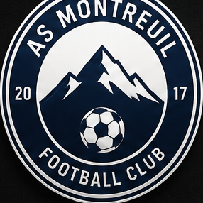
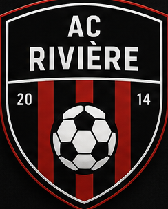

Donner à chaque joueur amateur un suivi digne d'un centre de formation.
Le staff numérique qui transforme le débrief du coach en suivi pour chaque joueur.

AS Montreuil FC 0 – 2 AC Rivière
DÉMONSTRATION (EXTRAIT DE 20 SECONDES)
Après le match, une note vocale de 2 minutes.
Faîtes votre débrief à voix haute, joueur par joueur — Seedinho écrit un rapport pour chacun.
Transcription
Ce que fait Seedinho
Ce que ça vous fait gagner
En 2 minutes, le travail d'un staff.
Rapports du match
Système 4-3-3 · 11 rapports individuels prêts
{{ report.name }}
#{{ report.num }}Résumé du match
{{ report.summary }}
Le contexte de ton match
{{ report.contextText }}
Tes points forts
Ton axe de progression
{{ report.axis }}
{{ report.objective }}
{{ rec.desc }}
C'est vous qui décidez quoi partager — Seedinho ne remplace pas le coach.
Mes 5 derniers matchs
{{ r.summary }}
{{ season.progress }}
REJOINDRE SEEDINHO GRATUITEMENT
Envie de suivre votre équipe comme ça ?
Laissez-nous vos infos, on vous recontacte pour démarrer avec votre club gratuitement.
L'envoi n'a pas abouti. Réessayez, ou écrivez-nous à seedinho.contact@gmail.com.
Vos infos sont transmises directement à l'équipe Seedinho.
Merci, on revient vers vous vite !
Vos infos sont bien arrivées chez l'équipe Seedinho. On vous recontacte pour démarrer avec votre club.